Scroll untuk memulai
Swipe ke kanan untuk memulai
Januari 2018
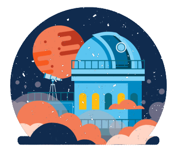
Fenomena 150 tahun sekali
SelengkapnyaApril 2018
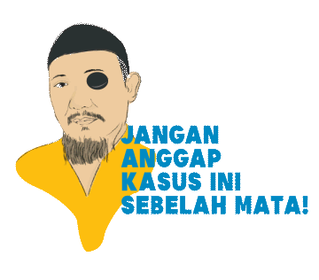
Kami Bersama Novel
SelengkapnyaApril 2018
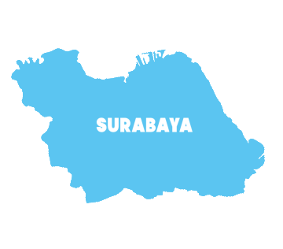
Rentetan Teror di Surabaya
SelengkapnyaMei 2018
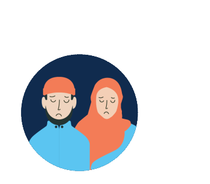
Tipuan Bisnis Umrah
SelengkapnyaJuni 2018
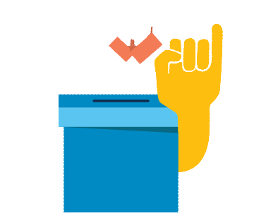
Memilih Pemimpin Daerah
SelengkapnyaJuli 2018
Lombok Terguncang
SelengkapnyaAgustus 2018
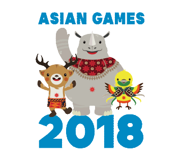
Prestasi dan Rapor Merah Tuan Rumah Asian Games
SelengkapnyaJuli 2018
#DukaBolaKita
SelengkapnyaSeptember 2018
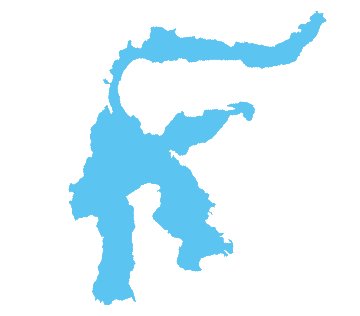
Duka di Sulawesi Tengah
SelengkapnyaAgustus 2018

Ada Apa dengan Ratna Sarumpaet
SelengkapnyaOktober 2018
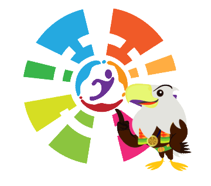
Inpirasi dari Atlet Disabilitas
SelengkapnyaNovember 2018
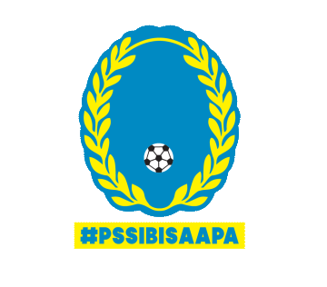
#PSSIBisaApa
SelengkapnyaDesember 2018
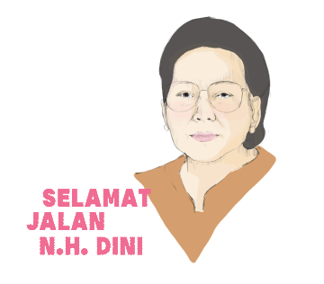
Duka di Sastra Indonesia
SelengkapnyaDesember 2018
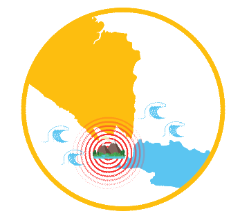